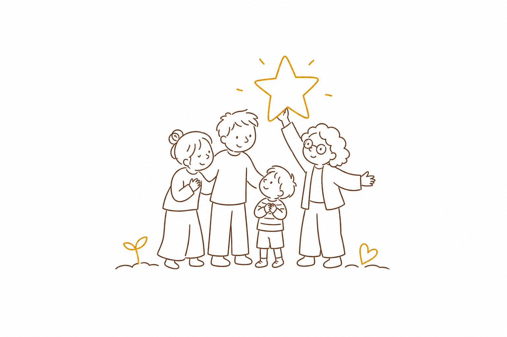

何度言っても伝わらない。まわりの目も気になる。気づけば「なんでできないの」と、強い言葉が出てしまう。そして子どもが寝たあと、ひとりで自分を責めてしまう ── そんな夜を、あなただけが過ごしているわけではありません。
直したいのは、子どもじゃなかった。
声のかけ方の方だったのかもしれません。
ある夜、強く言ったとき、
子どもが小さくこぼしました。
「ぼく、ダメな子だから」。
創業メンバー自身も、3人の子が「グレーゾーン」。この一言が、ワクコエラボの出発点でした。だから私たちは、親を責める道具ではなく、親の隣に立つコーチをつくっています。
困ったその瞬間に、スマホで1行。専門用語も、長い入力も必要ありません。
「公園から帰れない」「朝の着替えをしない」など、いま困っていることをそのまま打つだけ。
その子の特性傾向をふまえて、共感のひと言と「こう言ってみては？」を、その場で返します。
試した結果を1タップで。「効いた／違った」が積み重なるほど、提案がその子に合っていきます。
むずかしい操作はいりません。スマホの中で、こんなふうに支えます。
「公園から帰れない」「朝の着替えをしない」──いま困っていることを、そのまま打つだけ。その子の特性傾向をふまえた、共感のひと言と具体的な声かけ案が、その場で返ります。
本当はかかりつけの先生に、こまめに相談できたらいい。WAKU-LOGの通知は、その“面談”をアプリの中で代わりにつくります。出しゃばらず、ちょうどいいタイミングで。
相談と「効いた」の記録が積み重なるほど、WAKU-LOGはその子のことを覚えていきます。「この子には何が効くか」が、まるで“わが子の取扱説明書”のように貯まっていきます。
WAKU-LOGは、相談のたびにその子のことを覚えていきます。「何が効いて、何が効かなかったか」を記憶に積み上げ、汎用的な答えから"わが子だけの答え"へ変わっていきます。
30問ほどのチェックに答えると、その子の傾向を初期プロフィールに。この時点ではまだ「傾向の近い子 向け」の一般的なアドバイスです。
傾向をふまえ「見通しを立てる」アプローチを提案。テーマカード「公園から帰れない」が自動で生まれます。
「帰る5分前にタイマーで“鳴ったら帰ろうね”と伝えてみましょう」「タイマーでの予告が効いた」と記録。これがその子の"効くコツ"として、次の相談に引き継がれます。
この一回が、次から「はるみちにはタイマーが効く」という記憶になります。WAKU-LOGは先週の成功を覚えていて、「この子には予告と"見せる"が効く」と判断。着替えにも「タイマー＋ステップ絵カード」を提案します。
先週の"効いたコツ"が、はじめての悩みにも自然に活かされる。相談と「効いた」の記録が積み重なり、新しい悩みが来ても、もう"はるみち専用の解き方"を持っています。まるで、かかりつけの先生のように。
毎日のひと相談が、わが子だけの「取扱説明書」になっていく。
わが子のことだから、安心が何より大事。WAKU-LOGが約束することを、正直にお伝えします。
特性に「病名」をつけるためのものではありません。目的は、今日の声かけをほんの少しラクにすること。
先行βは無料です。本名も診断名も入力は必須ではありません。合わなければ、いつでもやめられます。
相談や「効いた」の記録は大切に保管し、その子への提案の精度を高めるためだけに使います。勝手に消しません。
困りごとの奥にある得意を、いっしょに探す道具です。落ち着きのなさは行動力、こだわりは探求心かもしれません。